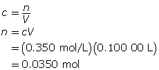

Module 4—Properties of Solutions
 Self-Check Answers
Self-Check Answers
Step 1: Calculate the mass of solute required.

First, determine the number of moles of FeSO4•7H2O(s) required.

Now, calculate mass of solute required.

The mass of FeSO4•7H2O(s) required is 9.73 g.
Step 2: Measure 9.73 g of iron(II) sulfate—water (1/7) in a clean, dry beaker (weighing boat or weighing paper) using an electronic balance.
Step 3: Pour about 50 mL of distilled water into a beaker. Transfer the iron(II) sulfate—water (1/7) to the beaker containing the water. Stir to dissolve.
Step 4: Transfer the contents of the beaker into a 100-mL volumetric flask. Rinse the beaker and transfer the rinse water to the volumetric flask.
Step 5: Add distilled water to the volumetric flask until the calibration line is almost reached. Use an eyedropper to add the remaining water so that the bottom of the meniscus meets the calibration line.
Step 6: Stopper the flask and mix the solution by inverting.